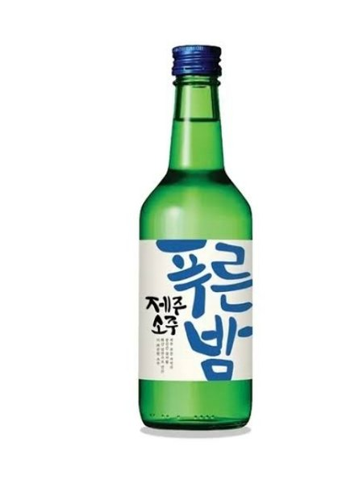

푸른밤
올레소주 후신, 2019 짧은밤·긴밤 통합 · 2024 OB맥주 인수

- 분류
- 희석식
- 도수
- 16.9도
- 출시
- 2017.09
- 제조사
- OB맥주제주공장
- 지역
- 제주도
이름 유래
제주의 푸른 밤바다 정취를 차용한 명칭. 2014년 '제주 올레소주'를 전신으로 하며, 한라산소주와 상표권 분쟁 이후 브랜드를 '푸른밤'으로 재정렬해 2017년 9월 공식 출시.
상세 연혁
짧은밤(16.9도)·긴밤(20.1도)으로 도수를 구분해 운영. 2011년 8월 제주천수 설립 → 2014년 6월 제주소주로 상호 변경 → 2016년 신세계그룹 인수(매각가 190억원) → 2017년 9월 '푸른밤' 공식 출시 → 2021년 3월 사업 중단 → 2021년 8월 20일 신세계L&B에 흡수합병("신세계L&B 제주사업소") → 2022년부터 수출용 리큐르 소주 OEM 생산 → 2024년 9월 오비맥주가 신세계L&B로부터 인수 → 2024년 12월 흡수합병 완료, 제주소주 법인 해산 후 '오비맥주 제주공장'으로 재편. 현재 동남아·미주 일부 채널을 겨냥한 수출용 리큐르 소주(과일향·저도수 포맷 중심)를 생산하며 제주 기반 수출 거점으로 운영 중.
지역별 소주 브랜드 전체 보기 →